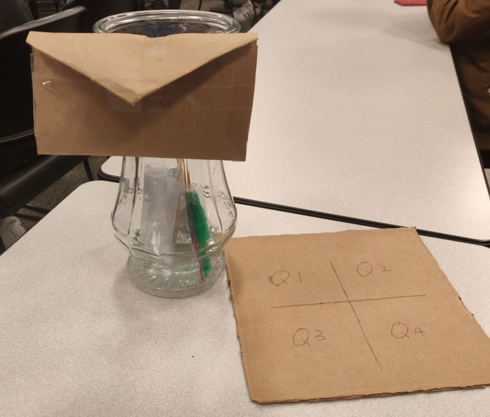

As global warming accelerates, the average temperature rise on the Earth's surface
is getting faster and faster. From 1880 to 2019, the average global temperature has
risen by only 0.8 Celsius, but it starts to rise much faster from 2020 due to some
factors that can not be explained scientifically. Scientists declared a state of
emergency claiming we will go extinct in 100 years if the global temperature rise persists.
This unexplainable phenomenon is specifically significant in the Arctic regions,
so large-scale research teams are set up to solve these unknown phenomena and sent
to the Arctic region.
Now in 2519, with the efforts of many people, rapid warming has been slowed down considerably.
Humans are still alive even 500 years after the declaration was published, but people are
suffering because of the already enormous temperature. Earth does not have four seasons anymore,
and there is only hot weather. The younger generations have never seen natural ice and snow.
Also, our population has enormously decreased since most of the inhabitable areas are submerged
by increased sea level with melted ice from the arctic regions. To avoid burning at too high a
temperature and not to be addicted to pollutants in the air, everyone wraps their bodies in clothes
and masks when they go out.
While people are suffering in such pain, the research in arctic regions is still ongoing.
You are the head team leader of a research team from America. This evening, you are scheduled
to do an examination and inspection on a sample that your team discovered. It is melted ice
in a glass jar, left by scientists 50 years after the start of the rapid warming. You and your
team are speculating that this sample could be a crucial hint to figure out the causes of
unexplainable climate change.
As soon as you open the glass jar, you are traveled back to the year 2019, where the weather
and environment are quite normal but still potentially dangerous. You are about to embark on a
game that could save the fate of humanity. You will be asked questions, and something in the
future will change depending on your answers. Be very responsible and considerable, because the
choices you make will affect the state of the world in the future. Good luck.
Our finished artifact with the answer board.

A close up of our jar with the questions and puzzle pieces inside.
A close up of the water or "last melted ice" in the glass jar.
Close up of question 1. It includes a piece of paper with the question on it, and 2 different
puzzle pieces in the ziploc back to keep it waterproof.
This shows how the player's answer board would look after completing all the questions. In this picture
all the pictures are in color, so they answered all the questions right.
This is our QR code! You can scan it with your phone using the camera or a QR scanner app.
Try it out and see how it brings you to our Twine game.
Directions on How to Play
First, read the introduction letter. That will tell you the backstory of the game.
Then you will scan the QR code at the bottom of the introduction letter. This will lead you to a website
where you will start the game.
For the game you will read a story that relates to a question you will have to answer.
Once you have read the story, you will go back to the jar and take out the bag that is labelled 1.
In the bag will be a piece of paper with a question on it, and 2 puzzle pieces. Once you have read the
question, you will go back to the website to pick your answer. After you have your answer you will get
a puzzle piece. If you picked answer A, you will take out the puzzle piece that has A on the back on the
picture. If you picked answer B, you will take out the puzzle piece that has a B on the back of the picture.
You will then take that puzzle piece and lay it out on the answer board and add more to it later.
You will repeat this for questions 2,3 and 4. Make sure to take out the bags from the jar in that order also.
What changed during the quarter?
However, we had to change
our plan as we could not find a way for our idea to work with a carousel book. So we decided to change
and use a glass jar to store our questions instead. The glass jar acts as a channel that drags players back in
time.
For the question bags, we decided to wrap them up in a ziploc bag and label each of our four questions
with a flag to indicate the question number. By wrapping our questions up with a ziploc bag, they are waterproof
and will remain dry until a person finds it 50 years in the future. According to the back story of our
project, there would be only one season in the future that the weather would be hot all year around.
We also put our questions in water to represent the last ice that has melted. We thought that we met our
goal really well as we created an artifact that will survive in any kind of weather until it
is discovered.
Our first idea for physical artifact was an art book. We were going to have one question per page,
6 questions total. In our book review we found a book of how to make art books that we can use for our project.
We planned how to get materials as well as when to meet for making. However, we realized our design did not
show any connections with the theme of the project after we presented our first idea pitch.
We changed to a glass jar that works as a “treasure box” to trigger our new concept with time travel. Next,
we had an idea for interaction between this artifact and our digital part. First, we tried to create QR code
puzzle with different pieces from each question. But it was hard to combine pieces together and make it work,
so we decided to make a puzzle of four seasons instead of QR code. We put the QR code in our introduction letter
that leads the player to our twine game.
Also we changed our website according to the feedback we received after our Idea Pitch. The feedback we
received on that was to make the background brighter, change the font, add a navigation bar and more pictures.
We also changed out website again when the final artifact was due. We changed the whole front page to
be more useful for the user, and changed the colors of the website so it would like more put together.
Lastly, we added stories for each question that confuses players between the right and wrong answers.
We thought going through such difficulties will make it more exciting and interesting for players, because
they are more engaged with careful thinking.
Although we went through a lot of changes during the quarter with our artifact idea, we thought that we met
our goals really well as we created an artifact that helps the player see how impactful the choices they make
now can affect the future of our planet. The questions that we chose for our game are simple, for example
would you drive an electric or gas car? This may seem like a simple question, but every choice we make
affects the future. If the player gets even one question wrong, this means they lose the game and in the
future the four seasons are not restored. This teaches them how important it is to be constantly
thinking of ways they can improve their everyday lifestyle to help the Earth.
Did we succeed during the Quarter?
Although we went through a lot of changes during the quarter with our artifact idea, we thought that we met
our goals really well as we created an artifact that helps the player see how impactful the choices they make
now can affect the future of our planet. The questions that we chose for our game are simple, for example
would you drive an electric or gas car? This may seem like a simple question, but every choice we make
affects the future. If the player gets even one question wrong, this means they lose the game and in the
future the four seasons are not restored. This teaches them how important it is to be constantly
thinking of ways they can improve their everyday lifestyle to help the Earth.
My role in the making of our artifact was mainly the non digital part.
I came up with the main idea and the backstory.
We used the glass jar which Ellie brought from home. I printed out the pictures as two versions,
the black & white version and the colorful version. I also printed out the questions for players to answer.
The questions and the pictures as choices should be together as a set in the glass jar. Because we
put the water in the glass jar to represent the last melted ice , I decided to use the plastic bag
to wrap them to prevent them from getting wet. I used a ziploc back, which is used to store food. After I
wrapped them together, I taped a stick on the bag. I did this because the stick is helping players to take
the bag out of the jar and it also marks the question number so the players can easily tell the number and
take them out by order. The answer board I used is simple cardboard. I cut it so the answer pictures
could fit on it. From this class I realized that making a game is not a simple thing at all. Not only do you need to
make it easy for people to play the game, you also need to make sure is understandable and
convenience enough. Every single detail should be tested and considered over and over.
Alyshia
My role in the making of our artifact was to create all the digital parts. This means that I was in charge of
making our website and making the digital interaction part.
For the website I decided that I wanted to make
it from scratch and code everything myself. At the beginning of the quarter I was not sure if I was able
to do this because I only had very little knowledge of html and css. But I was determined to make it by scratch
and I think that I succeeded in that. Our website may not be as fancy as a website made with wordpress or
wix, but I am proud how far I home come in web development by just teaching myself.
For the digital interaction I decided to make a twine game. I thought of this idea when we had to make a twine
for an assignment. Twine really caught my interest since it is like html. For the digital interaction, we wanted
to make sure that it interacted with the non-digital part. To do this we had the questions for our game in
our glass jar, but then to answer the question the player had to go onto twine, read a story about the question
and then answer on twine. At the end of the game the player inputs how many points they got, which they do by
counting the number of colored puzzle pieces they have. Once they enter their points, it directs them to a page
either saying they lost the game or won the game. To do this, in twine I created a textbox with code
so the player could enter their score. In order to direct them to the right page at the end, I used if
statements.
At the start of the quarter I was not sure how we would make an artifact that fil all the requirements. Now
that we are done, I am very happy with the finished product. I think what makes the whole project come
together is the backstory. Once we had written that the whole artifact had a deeper meaning and was
instantly more fun.
Piyapat
My role in the making of our artifact was mostly on the non digital aspect of our project. I was mostly in charge
of coming up with the questions that were used in our game. We decided to mainly ask questions about the decisions the
person who found our artifact would make when he found our artifact in the future. All of our questions were
related to the weather since we decided that in the future summer would be the only season
and that it is hot everywhere in the world. An example of a question we used would be if the person who was
playing the game would use electric cars over normal cars if they had a choice and if they got the correct
answer they would receive a colored version of the puzzle piece that represented a season. If you got four
puzzle pieces, it means that you got all the correct answers to the puzzle. We included a QR code in our
introduction letter which would direct the player to our website where you can add up the score and see the
image of the four seasons that used to exist.
Ellie
First, I came up with the idea for the physical appearance of our artifact during a library session that we had earlier
in the quarter. It was from our book review, and I picked one of the books that we could make.
In searching for information, I looked for resources on climate change issues and environmental pollution
that can support our backstory and questions. I thought the organizing basis of our project with realistic
information can make players feel more connected and engaged than using only fictional stories. I had a
class thaet deals with environmental pollution problems and how to protect the Earth, so I could use those lessons
in composing basic concepts. All the questions that I wrote are based on research that I did, and I also
edited questions other members wrote to be based on facts. As an extension of this, I modified and changed
part of the backstory that other team member first gave ideas on. I added details
that can grab players’ attention and look interesting. For example, I created the idea that the player was
part of a research team for climate change in the future. With that, players can be more engaged into the game
because this kind of concept creates conditions that player have to adapt on and feel interesting. Players tend to
experience more interaction when conditions and constraints are set, and that’s where players start having fun.
The hardest part during project was understanding what interaction is, because I did not get the concept of
exchanging information that goes between two or more objects. Through working on assignments, I learned how
digital media interacts with people by responding to each others actions, and how people find “fun” during
those process. I also learned how media is designed to interest people, and is all about creating high quality
interaction.